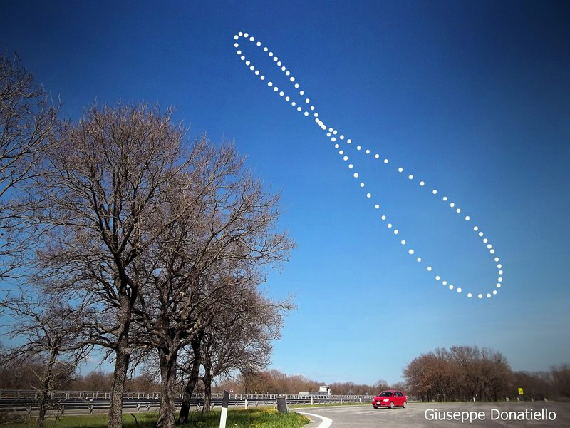

L’orologio della pagina 1.3 mette il mezzogiorno alle 12:00 ogni giorno, ma il Sole reale attraversava il meridiano fino a 14 minuti più tardi a febbraio e 16 minuti e mezzo prima a novembre. La pagina 2.1 ha trovato una delle cause, il moto disuniforme del Sole lungo l’eclittica, e ha nominato l’altra, l’inclinazione dell’eclittica sull’equatore.
Mettendole insieme si ottiene l’equazione del tempo, la correzione che mette d’accordo una meridiana con un orologio. Con l’eccentrico della pagina 2.1 e l’obliquità della pagina 1.2, e nient’altro, risulta giusta entro pochi secondi.
1 · OsservazioneLa meridiana e l’orologio
Una meridiana mostra il tempo solare vero, l’angolo orario del Sole reale, e segna le 12:00 quando il Sole attraversa il meridiano. Un orologio mostra il tempo solare medio, l’angolo orario del Sole medio della pagina 1.3. Chiamiamo la differenza, meridiana meno orologio, equazione del tempo $E$. È positiva quando la meridiana è avanti.
A Greenwich, dove l’orologio segna il Tempo Universale, la meridiana è più indietro rispetto all’orologio a metà febbraio e più avanti all’inizio di novembre, con due oscillazioni minori in mezzo, a maggio e a luglio, e i due vanno d’accordo solo in quattro giorni dell’anno.
Un singolo giorno mostra appena la differenza, perché il giorno solare vero, da un mezzogiorno reale al successivo, non è mai più lungo o più corto di 24 ore di più di mezzo minuto. Ma i giorni corti arrivano in lunghe serie, 100 di fila nel 2025, e su una serie i loro ammanchi si sommano, come mostra la Figura 1.
(a) il giorno solare vero
(b) la meridiana meno l’orologio
Nella figura
- punteggiato
- i quattro giorni di esattamente 24 ore
Da metà febbraio all’inizio di novembre i giorni restano sotto le 24 ore di circa mezz’ora in tutto, che è esattamente ciò che la meridiana guadagna sull’orologio in quei mesi. L’equazione del tempo è la somma progressiva delle differenze dei giorni da 24 ore. Su un anno intero le differenze si annullano, perché l’orologio è definito come la media del Sole.
Tolomeo fa la stessa osservazione: la differenza fra un giorno solare vero e uno medio non produce «una differenza percettibile» per un singolo giorno, «ma la differenza accumulata su un certo numero di giorni solari è ben evidente» (Almagest III 9).
Anche una macchina fotografica può registrare l’equazione del tempo. Fotografato alla stessa ora dell’orologio in giorni distribuiti su un anno, il Sole traccia una figura a otto chiamata analemma. La sua altezza è la declinazione del Sole, e la sua larghezza da un lato all’altro è l’equazione del tempo.

.jpg){kind=link}
2 · ModelloDue cause del giorno solare disuguale
L’equazione del tempo
Il Sole medio della pagina 1.3 è un punto immaginario che si muove lungo l’equatore celeste a velocità costante, con l’ascensione retta sempre uguale alla longitudine eclittica media del Sole, $\alpha_m = \bar\lambda$. Poiché si muove uniformemente lungo l’equatore, il suo angolo orario cresce esattamente di 15° all’ora, che è ciò di cui ha bisogno un orologio.
Entrambi i tempi sono angoli orari, $H = \theta - \alpha$, quindi in ogni istante la loro differenza è la differenza delle due ascensioni rette. In gradi,
$$E = H - H_m = \alpha_m - \alpha = \bar\lambda - \alpha,$$e in tempo 1° vale 4 minuti, perché il cielo ruota di 360° in 24 ore. Vogliamo dividere questa differenza nell’effetto della velocità disuniforme del Sole, che la pagina 2.1 ha modellato, e nell’effetto dell’inclinazione. Aggiungere e togliere la longitudine eclittica vera $\lambda$ lo fa:
Tolomeo nomina le stesse due cause: il tratto supplementare di equatore che attraversa il meridiano ogni giorno «non può essere costante, per due ragioni: primo, a causa dell’anomalia apparente del sole; e secondo, perché sezioni uguali dell’eclittica non attraversano né l’orizzonte né il meridiano in tempi uguali» (Almagest III 9).
La parte dell’eccentricità
La prima parte è l’equazione del centro della pagina 2.1 con il segno cambiato. Mentre il Sole corre avanti rispetto al suo posto medio, $q > 0$, la sua ascensione retta cresce più di quella del Sole medio, esso raggiunge il meridiano più tardi, e la meridiana resta indietro. Al primo ordine $-q \approx e\sin M$ in radianti, quindi questa parte oscilla di circa 1,9° da una parte e dall’altra, ovvero 7,7 minuti di tempo.
La parte dell’obliquità
La seconda parte resterebbe anche per un Sole che si muovesse uniformemente lungo l’eclittica. La sua ascensione retta segue dalla formula di conversione $\tan\alpha = \cos\varepsilon\tan\lambda$ della pagina 1.2, la cui tabella mostrava $\alpha$ restare indietro rispetto a $\lambda$ nel primo quadrante. Per vedere come il ritardo dipende da $\lambda$, scriviamo la tangente della differenza:
$$\tan(\lambda - \alpha) = \frac{\tan\lambda - \tan\alpha}{1 + \tan\lambda\tan\alpha} = \frac{(1 - \cos\varepsilon)\sin\lambda\cos\lambda}{\cos^2\lambda + \cos\varepsilon\sin^2\lambda}.$$Con $\sin\lambda\cos\lambda = \tfrac12\sin 2\lambda$, $\cos^2\lambda = \tfrac12(1 + \cos 2\lambda)$ e $\sin^2\lambda = \tfrac12(1 - \cos 2\lambda)$, e dividendo numeratore e denominatore per $\tfrac12(1 + \cos\varepsilon)$,
Il secondo membro ha la stessa forma dell’equazione del centro della pagina 2.1, $\tan q = -e\sin M / (1 + e\cos M)$, con $e_\varepsilon$ al posto di $e$ e $2\lambda$ al posto di $M$, quindi i risultati della pagina 2.1 valgono per il ritardo senza nuovo lavoro. Per l’obliquità di oggi $e_\varepsilon = 0{,}0430$.
Al primo ordine $\lambda - \alpha \approx e_\varepsilon \sin 2\lambda$ in radianti. Il suo valore massimo è esattamente $\arcsin e_\varepsilon$, circa 2,47° ovvero 9,9 minuti di tempo, raggiunto a $\lambda \approx 46^\circ$ e alla stessa distanza da ogni altro equinozio e solstizio.
Il ritardo viene da una differenza di velocità fra $\alpha$ e $\lambda$. Derivando $\tan\alpha = \cos\varepsilon\tan\lambda$ si ha
$$\frac{d\alpha}{\cos^2\alpha} = \cos\varepsilon\,\frac{d\lambda}{\cos^2\lambda}, \qquad \frac{d\alpha}{d\lambda} = \cos\varepsilon\,\frac{\cos^2\alpha}{\cos^2\lambda}.$$Per un punto dell’eclittica le formule di conversione della pagina 1.2 danno $\cos\delta\cos\alpha = \cos\lambda$, quindi il rapporto dei due coseni al quadrato è $1/\cos^2\delta$, e
Agli equinozi $\delta = 0$ e il rapporto è $\cos\varepsilon$: l’eclittica attraversa l’equatore obliquamente, solo una parte del moto del Sole è verso est, e $\alpha$ cresce circa l’8% più lentamente di $\lambda$. Ai solstizi $\delta = \varepsilon$ e il rapporto è $1/\cos\varepsilon$: l’eclittica corre parallela all’equatore, tutto il moto è verso est, e avviene a una declinazione di 23,4°, dove i cerchi orari sono più vicini fra loro, quindi $\alpha$ cresce circa il 9% più in fretta.
Così $\alpha$ resta indietro rispetto a $\lambda$ dopo ogni equinozio e recupera prima di ogni solstizio. Il ritardo è massimo dove le due velocità sono uguali, $d\alpha/d\lambda = 1$ (Esercizio 3). La Figura 2 parte con $\varepsilon = 45^\circ$, quasi il doppio dell’inclinazione reale, perché l’arco si possa vedere sulla sfera.
(a) il Sole uniforme e il Sole medio
(b) il ritardo nel corso dell’anno
Nel pannello (a)
- cerchio blu
- l’equatore celeste
- cerchio oro
- l’eclittica, lungo la quale il Sole (punto oro) si muove uniformemente
- tratteggio
- il cerchio orario del Sole, che incontra l’equatore all’ascensione retta α del Sole
- punto blu
- il Sole medio, ad ascensione retta λ, lontano da γ lungo l’equatore quanto il Sole lungo l’eclittica
Nel pannello (b)
- tratteggio
- l’approssimazione al primo ordine, $e_\varepsilon \sin 2\lambda$
La somma
Sommando le due parti, al primo ordine in $e$ e in $e_\varepsilon$ e in radianti, si ottiene:
$$E \approx e\sin M + e_\varepsilon \sin 2\bar\lambda,$$un’onda annua di 7,7 minuti più un’onda semestrale di 9,9 minuti. Nel 2025 questa approssimazione è entro un minuto dalla somma esatta. La Figura 3 mostra le due parti e come si sommano.
Nella figura
- verde
- la parte dell’eccentricità, $-q$, dall’eccentrico della pagina 2.1
- blu
- la parte dell’obliquità, $\lambda - \alpha$
- rosso
- la loro somma, l’equazione del tempo $E$
L’onda semestrale è la più grande, quindi $E$ ha due massimi e due minimi. L’onda annua li rende disuguali: approfondisce il minimo di febbraio e il massimo di novembre, dove ha lo stesso segno dell’onda semestrale, e riduce gli altri due. I quattro zeri di $E$ cadono dove le due onde si annullano.
L’analemma
A mezzogiorno medio il Sole medio è sul meridiano, $H_m = 0$, quindi l’angolo orario del Sole reale è $H = E$, che in gradi è $E$ diviso per 4 minuti. Tracciato in funzione della declinazione del Sole nel corso di un anno, questo angolo orario disegna l’analemma della fotografia, come apparirebbe a mezzogiorno, dritto.
Nella figura
- tratteggio tenue
- entrambe le cause, per confronto con una causa sola
- punteggiato
- il meridiano, dove una meridiana segna mezzogiorno
- scale
- l’angolo orario è disegnato circa quattro volte più grande della declinazione
L’analemma si incrocia a una declinazione di circa 9°, dove il Sole si trova a metà aprile e di nuovo a fine agosto con la stessa equazione del tempo.
3 · AdattamentoEccentricità, apogeo e obliquità dall’equazione del tempo
Il modello non ha parametri propri, perché $e$ e $\lambda_A$ vengono dalle stagioni (pagina 2.1) ed $\varepsilon$ dal Sole di mezzogiorno ai solstizi (pagina 1.2). Ma possiamo condurre il ragionamento al contrario. Un orologio e una meridiana, confrontati nel corso di un anno, misurano $E$, e se le due cause sono tutto ciò che c’è in $E$, essa dovrebbe restituire gli stessi tre parametri.
L’apogeo sta dentro il seno dell’onda annua, quindi prima lo portiamo fuori: nella formula al primo ordine, sviluppare $e\sin M$ con $M = \bar\lambda - \lambda_A$ divide l’onda annua in un seno e un coseno della longitudine eclittica media:
Su un anno intero le funzioni $\sin\bar\lambda$, $\cos\bar\lambda$, $\sin 2\bar\lambda$ e $\cos 2\bar\lambda$ sono ortogonali, quindi ogni coefficiente è una media, per esempio $e\cos\lambda_A = 2\,\langle E \sin\bar\lambda\rangle$. I due coefficienti annui danno $e$ e $\lambda_A$, e quello semestrale dà $e_\varepsilon$, quindi $\varepsilon = 2\arctan\sqrt{e_\varepsilon}$.
Applicate alla $E$ reale del 2025, le medie danno la prima colonna della tabella. Sono vicine, ma non esatte, perché la formula al primo ordine trascura due termini. L’onda semestrale dipende dalla longitudine eclittica vera, $e_\varepsilon \sin 2(\bar\lambda + q)$, e il prodotto delle due onde contiene una parte annua di ampiezza $e\,e_\varepsilon$, che vale circa 20 s, che l’adattamento prende per parte dell’eccentricità e dell’apogeo. Il termine del secondo ordine del Sole stesso cade in parte sull’onda semestrale e alza $\varepsilon$ di qualche primo d’arco.
L’adattamento esatto
La seconda colonna adatta il modello esatto, $E = -q + (\lambda - \alpha)$ più una costante, ai 365 valori giornalieri con i minimi quadrati. Il modello non è lineare in $e$, $\lambda_A$ ed $\varepsilon$, quindi l’adattamento parte dai valori al primo ordine e li migliora con l’iterazione di Gauss–Newton: a ogni passo il modello si linearizza attorno ai valori correnti, si risolve il problema lineare ai minimi quadrati per le correzioni, e le correzioni si applicano. Converge in pochi passi e lascia residui di circa un secondo.
| Parametro | da $E$, primo ordine | da $E$, esatto | pagine precedenti |
|---|---|---|---|
| $e$ | 0,0322 | 0,0334 | 0,0335 (2.1) |
| $\lambda_A$ | $104{,}5^\circ$ | $103{,}4^\circ$ | $103{,}7^\circ$ (2.1) |
| $\varepsilon$ | $23{,}51^\circ$ | $23{,}39^\circ$ | $23{,}44^\circ$ (1.2) |
L’adattamento esatto ritrova l’eccentricità della pagina 2.1, e un apogeo un terzo di grado a ovest di quello della pagina 2.1, vicino a quello del Sole di riferimento: l’adattamento alle stagioni mette l’errore di forma dell’eccentrico nell’apogeo, l’adattamento a $E$ nel termine semestrale. La sua obliquità è quindi troppo piccola di 3′, perché l’eccentrico differisce dall’ellisse della teoria moderna al secondo ordine (pagina 2.1). Questo gli dà un termine semestrale leggermente sbagliato, e l’adattamento lo compensa abbassando $e_\varepsilon$.
4 · VerificaL’equazione del tempo contro il Sole reale
L’orologio della pagina 1.3 non aveva alcuna equazione del tempo, quindi il suo mezzogiorno sbagliava dell’intera $E$, a volte più di un quarto d’ora. Qui prevediamo $E$ dalle sole stagioni del 2026 e dall’obliquità media, la verifica dell’adattamento condotta al contrario, e la Figura 5 confronta la previsione con l’equazione del tempo reale del 2025 nel cielo di riferimento.
(a) il modello e l’equazione del tempo reale
(b) modello meno reale
Nel corso del 2025 la previsione non è mai a più di 6,4 s dall’equazione del tempo reale, dove l’orologio della pagina 1.3 sbagliava di minuti. Quasi tutto questo viene dall’errore dell’eccentrico in longitudine eclittica, sotto i 2′ (pagina 2.1), perché 1′ di longitudine eclittica vale circa 4 s di tempo.
Le piccole increspature mensili in (b) sono quelle della Luna, spiegate nella pagina 2.1.
StoriaL’equazione del tempo di Tolomeo
A Tolomeo l’equazione del tempo serviva per la Luna. Le sue tavole lunari contano giorni solari medi, mentre le sue eclissi erano cronometrate con il cielo, e fra due osservazioni la differenza può superare un’ora, in cui la Luna si sposta più della propria larghezza (III 9). Calcolò le due parti con il proprio Sole, in gradi di tempo, ciascuno i 4 minuti che il cielo impiega a ruotare di 1°.
Sui tratti dell’anno in cui le due parti agiscono nello stesso senso, trovò una variazione di 33 minuti, contro i 31 del suo tempo, perché la sua eccentricità è troppo grande di un quinto (pagina 2.1). Il preset «140 d.C.» della Figura 6 mostra la curva reale del suo tempo.
5 · ResiduoL’equazione del tempo nel corso dei secoli
Il modello di questa pagina tiene il suo apogeo fisso al posto del 2026, mentre la pagina 2.1 ha trovato dalle stagioni che l’apogeo si muove. Il suo errore cresce quindi allontanandosi dal 2026, fino a più di un minuto su mille anni.
La curva reale cambia forma nel corso dei secoli. La sua onda semestrale è legata agli equinozi e ai solstizi, ma la sua onda annua all’apogeo, quindi mentre l’apogeo si muove l’onda annua scorre lungo l’anno rispetto a quella semestrale, come mostra la Figura 6.
Nella figura
- tratteggio
- il modello di questa pagina, con l’apogeo del 2026
La maggior parte del moto dell’apogeo, come ha trovato la pagina 2.1, è quella di γ stesso, l’origine di ogni longitudine eclittica, quindi il lento cambiamento dell’equazione del tempo è per lo più precessione: l’intero sistema di riferimento che usiamo dalla pagina 1.2 sta ruotando. Quanto in fretta ruoti è l’argomento della pagina 2.3.
Esercizi
Calcola l’equazione del tempo alle 12:00 UT del 3 novembre 2025 dall’eccentrico della pagina 2.1 ($L_0 = 280{,}45909^\circ$, $n = 0{,}98564735^\circ$ al giorno, $e = 0{,}033473$, $\lambda_A = 103{,}732^\circ$) e dall’obliquità media $\varepsilon = 23{,}4359^\circ$, e dividila nelle sue due parti. Verifica con le Figure 3 e 4.
Trova $d$ (in TT, 69 s dopo l’UT), poi $\bar\lambda$, $M$, $q$ e $\lambda$ come nella pagina 2.1, poi $\alpha$ da $\tan\alpha = \cos\varepsilon\tan\lambda$ nel quadrante di $\lambda$.
Alle 12:00 UT, $d = 9438{,}0008$ giorni, quindi $\bar\lambda = L_0 + n\,d = 222{,}9996^\circ$ e $M = \bar\lambda - \lambda_A = 119{,}2676^\circ$. L’equazione del centro è $q = -1{,}7004^\circ$, quindi $\lambda = 221{,}2992^\circ$, e $\alpha = 218{,}8697^\circ$, quindi $\lambda - \alpha = 2{,}4295^\circ$.
Allora $E = -q + (\lambda - \alpha) = 1{,}7004^\circ + 2{,}4295^\circ = 4{,}1299^\circ$, che fa $6{,}80 + 9{,}72 = 16{,}52$ minuti, ovvero +16 min 31 s. Entrambe le parti sono positive all’inizio di novembre, ed è per questo che $E$ è massima allora. La formula al primo ordine dà $6{,}69 + 9{,}84 = 16{,}53$ minuti.
L’equazione del tempo reale è +16 min 27 s, quindi il modello è troppo grande di 4 s. Il Sole reale attraversa il meridiano di Greenwich 16 min 27 s prima delle 12:00 UT.
Prima di guardare la Figura 4, prevedi in quali date $E$ si annullerebbe se il Sole si muovesse uniformemente ($e = 0$), e in quali date se l’eclittica non fosse inclinata ($\varepsilon = 0$). Poi trova le date reali, e spiega perché sono quattro.
Ogni parte si annulla dove si annulla il suo seno: $\sin 2\lambda = 0$ per una, $\sin M = 0$ per l’altra. Nella Figura 4, $E = 0$ dove la curva attraversa il meridiano.
Con $e = 0$ resta solo l’onda semestrale, $E = \lambda - \alpha$, che si annulla quattro volte, quando il Sole uniforme è a un equinozio o a un solstizio: il 22 marzo, il 21 giugno, il 20 settembre e il 21 dicembre 2025 («solo obliquità» nella Figura 4).
Con $\varepsilon = 0$ resta solo l’onda annua, $E = -q$, che si annulla due volte, al perigeo e all’apogeo: il 3 gennaio e il 5 luglio («solo eccentricità»).
Con entrambe, il modello e il Sole reale concordano sulle date: il 15 aprile, il 12 giugno, il 1º settembre e il 25 dicembre. Sono quattro perché l’onda semestrale è la più grande, circa 10 contro 8 minuti, quindi decide quante volte la somma cambia segno; l’onda annua si limita a spostare gli zeri.
Usando $d\alpha/d\lambda = \cos\varepsilon / \cos^2\delta$ e $\sin\delta = \sin\varepsilon\sin\lambda$, mostra che $|\lambda - \alpha|$ è massimo dove $\sin^2\lambda = 1/(1 + \cos\varepsilon)$, e che il suo valore massimo è $\arcsin\tan^2(\varepsilon/2)$. Trova entrambi per l’obliquità di oggi, $\varepsilon = 23{,}4358^\circ$, e verificali nella Figura 2.
Il ritardo è estremo dove la sua derivata, $1 - d\alpha/d\lambda$, si annulla. Per il valore massimo, usa l’Esercizio 2 della pagina 2.1 con $e_\varepsilon$ al posto di $e$ e $2\lambda$ al posto di $M$.
Con $\cos^2\delta = 1 - \sin^2\varepsilon\sin^2\lambda$, la condizione $d\alpha/d\lambda = 1$ diventa $\sin^2\varepsilon\sin^2\lambda = 1 - \cos\varepsilon$, e poiché $\sin^2\varepsilon = (1 - \cos\varepsilon)(1 + \cos\varepsilon)$,
$$\sin^2\lambda = \frac{1}{1 + \cos\varepsilon}, \qquad \cos 2\lambda = 1 - 2\sin^2\lambda = -\frac{1 - \cos\varepsilon}{1 + \cos\varepsilon} = -e_\varepsilon.$$È la condizione dell’Esercizio 2 della pagina 2.1, $\cos M = -e$, con $2\lambda$ al posto di $M$, quindi il valore massimo è $\arcsin e_\varepsilon$.
Per $\varepsilon = 23{,}4358^\circ$, $e_\varepsilon = 0{,}04302$, il ritardo è massimo a $\lambda = 46{,}23^\circ$, e il suo valore massimo è $2{,}466^\circ$, ovvero 9,86 minuti di tempo. Nella Figura 2, con «oggi, 23,44°», la lettura dà lo stesso.
Fonti
- Tolomeo, Almagest (trad. ingl. G. J. Toomer, 1984), III 9 (le due cause della disuguaglianza dei giorni solari, in gradi di tempo, 8⅓ in tutto fra la metà dell’Acquario e la fine della Bilancia; la regola per convertire i giorni solari veri in medi, e perché conta per la Luna), con la nota di Toomer sul moto della Luna in un’ora, 0° 32′ 56″ (0,549°, IV 3).
- R. Fitzpatrick, A Modern Almagest, § 5.4 e Tabella 5.5 (il sole medio e l’equazione del tempo; la sua formula al primo ordine 5.17 è scritta con l’eccentricità di Keplero e con $M$ contato dal perigeo).
- J. Meeus, Astronomical Algorithms (2ª ed., 1998), cap. 28 (l’equazione del tempo del cielo di riferimento, e il suo segno).
- E. M. Standish, Keplerian Elements for Approximate Positions of the Major Planets (JPL): il Sole di riferimento.
- Ogni numero di questa pagina:
tools/numbers/2.2-equation-of-time.js.